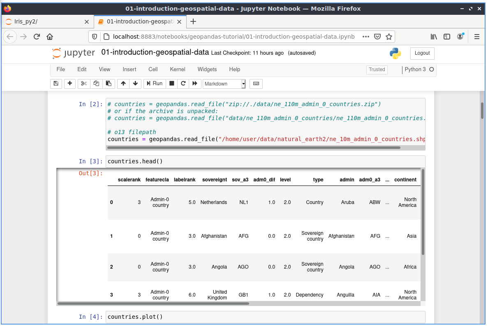

Guía Rápida de Jupyter Notebook¶
Jupyter Notebook es una aplicación web que permite crear y compartir documentos que contienen código en vivo, ecuaciones, visualizaciones y texto explicativo. Los usos incluyen: limpieza y transformación de datos, simulación numérica, modelado estadístico, aprendizaje automático y mucho más.
Esta guía de inicio rápido describe como:
Iniciar un servidor de Cuaderno Jupyter
Cargar un cuaderno jupyter
Interactuar con código python
Contenidos
Inicie el servidor de Jupyter¶
Desde el menú de inicio de la aplicación en la esquina inferior izquierda.
Elejir Geoespacial -> Herramientas espaciales -> Jupyter Notebook
Se abrirá una ventana de terminal y un registro de inicio comenzará a desplazarse. Posteriormente se inicia un navegador web que muestra el panel de control de Jupyter Notebook. Desde el panel de Control de Jupyter Notebook puede navegar por el árbol de directorios, iniciar nuevos blocs de notas, crear archivos y directorios, así como cambiar el nombre, eliminar y cargar archivos.

Abrir y ejecutar un cuaderno existente¶
Abramos un bloc de notas existente. Desde la página principal haga clic en el directorio geopandas-tutorial y elija el cuaderno de introducción (01-introduction-geospatial-data.ipynb). Esta es una introducción con muchos ejemplos sobre cómo usar datos vectoriales geoespaciales en Python con geopandas utilizando los datos de Natural Earth2.

El tutorial se compone de texto explicativo y celdas. Las celdas contienen en este caso código python, que se puede ejecutar.
Desde la barra de herramientas en la parte superior del cuaderno puede elegir diferentes opciones:
Cell-> Run Cells: ejecutará el código en la celda con el foco y se moverá a la siguiente celda.
Cell-> Run All: ejecutará todas las celdas y mostrará los resultados Si todo funcionó según lo planeado, debería poder ver los resultados en la parte inferior de la página.
Eche un vistazo a los resultados después de ejecutar todas las celdas.
{kind=link}
Verá una sección adicional Out[] con diferentes resultados, por ejemplo, tablas, mapas o cálculos.
En Out[3] puedes ver la información del país como una tabla.
En Out[4] se generó una trama de todos los países.

Cambiar código¶
Ahora cambiemos parte del código.
En In [10] se definió un filtro para los países. Solo el continente África se selecciona de los países:
In [10]: africa = countries[countries['continent'] == 'Africa']
Por lo tanto, en la trama solo existe el continente Africa.

Cambie la selección a Asia y vuelva a ejecutar las dos celdas.
In [10]: africa = countries[countries['continent'] == 'Asia']
Como resultado, verás que en lugar de África habrá Asia en la trama.

¿Qué sigue?¶
Descubra los otros cuadernos proporcionados con OSGeoLive y descubra cómo trabajar con Shapely, Rasterio, R, Iris y otros softwares.
Para obtener más información sobre el cuaderno jupyter, consulte la documentación oficial de Cuadernos Jupyter.
Hay más ejemplos de cuadernos están disponibles desde la raíz
Introducción rápida sobre cómo usar la interfaz de Jupyter Notebooks: Introducción a Cuadernos Jupyter.